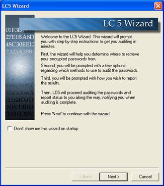
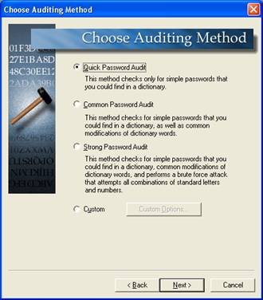

Quick Start with the LC5 Wizard
Wizard OverviewThe LC5 Wizard helps you quickly configure the settings needed to retrieve and audit passwords by the most common means, as well as provide a quick overview of the password auditing process. The Wizard opens by default the first time you run LC5. To administer LC5 without the Wizard, uncheck the Don't show me this wizard on startup checkbox. The Wizard can be launched at a later time from the LC5 toolbar. |
|
|
|
Choose Auditing MethodLC5 audits passwords in four methods. The more rigorous and involved the audit, the longer the audit requires. ·
The Quick
Password Audit requires a few minutes to perform and tries every word in
a 26,000 word dictionary file included with LC5 to find words matching the
passwords you examine. ·
To adapt to
corporate password policies requiring strong passwords, the Common
Password Audit programmatically varies the dictionary words by a number
of characters to find modified words. ·
The Strong
Password Audit incorporates a brute force audit by attempting all
combinations of letters and numbers to seek out computed passwords. This
approach may take longer than a day to perform. · The Custom Audit configures your audit more precisely. For example, you can change word files, change the hybrid mode parameters, or choose a different character set for the brute force audit. |
|
Pick Reporting StyleLC5 displays reports on the audit discoveries. Chose the reporting style to customize your report. ·
Display
passwords when audited reports on the audited passwords. Unselecting this selection reports
the safety of the password without disclosing the password. · Display encrypted password ‘hashes’ reports on encrypted passwords seen by the operating system. ·
Display
how long…
reports the length of time LC5 took to find a password. ·
Display
auditing method
reports the method used to find each password. · Make visible notification when auditing is done displays an alert dialog when the audit completes, even if you're working in another application. |
|
Begin AuditingOnce the Reporting options are selected, LC5 is ready to audit. Your settings are summarized before you Finish. Click Finish to begin the retrieval and audit begins. Check the Save these settings as session defaults check box to save these settings as session defaults.
|